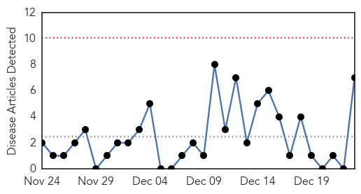

30 Day Trends
Web: 0 alerts, 0 warnings
Twitter: 0 alerts, 0 warnings
Top Articles:
- 0.984
- Egyptians criticize government's response to epidemics
- 0.935
- State Department issues global warning for Americans in holiday season
- 0.930
- Two return from Bali with measles, sparking warnings about possible infection
- 0.825
- Western Australia health issue measles warning for travelers on Air Asia flight
- 0.740
- Two people infected with measles in Bali
- 0.673
- Perth Airport, flight measles warning
- 0.657
- Bali measles warning
Top Tweets:
-
No tweets found for Dec 23, 2014
Web/News Articles
Tweets